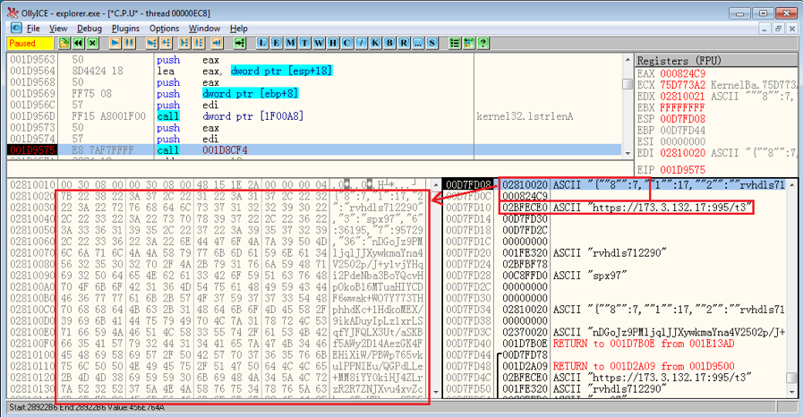

.png)
Q bot Pathing Algorithm
Timeline : January 2024 - February 2024
In this project, my team was in charge of creating a program for a roomba to follow a line. This program involved using a
simulation software to simulate how the Qbot would follow the path. Once the Qbot followed the path, at the end it needed
to drop an object into the objective. However, transferring from software simulations to the real Qbot was still challenging.
I also helped design mechanisms for the dumping of the object onto the mechanism.
How I did it:
To create the program, our team delegated tasks to each of us. I was in charge of color detection. The various sensors on the Qbot allowed for us to be able to detect where the objective is and if we are still on the line. If the sensor detected that the color underneath it was not correct, it would correct its path until it detects the correct color again. This however, did not come without any issues.

Mistakes Made:
The problems I faced was knowing how to get the bot back into the line. brainstorming with my team, we found a way to put it
back on track. We created an algorithm to ensure that the bot was on the inner side of the loop, so that if it went off track,
it would only have to turn one way to get back on track. however, we knew if this was not a loop, this algorithm would not be so
successful. Reflecting back to it, instead of the algorith that would keep it on the inner loop, it would instead swerve within
a certain radius until it got back on track. For the dumping Mechanism, I used CAD and 3D printed the arms.
Skills Mastered:
-

Python
-

Hardware
-

CAD